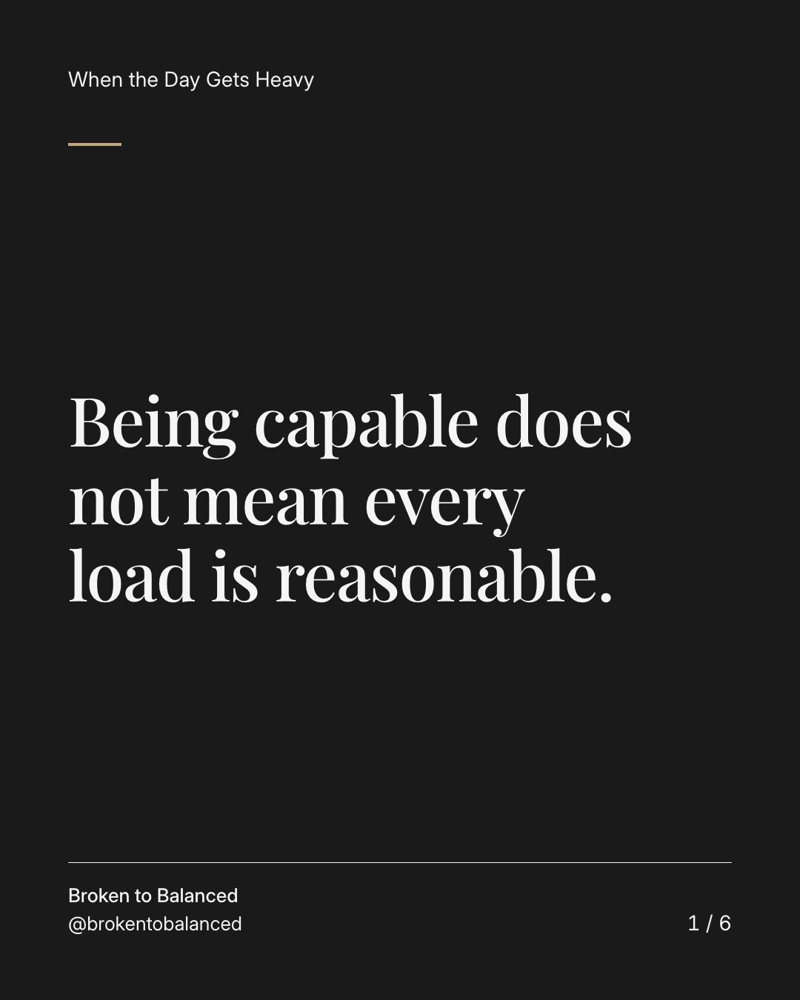
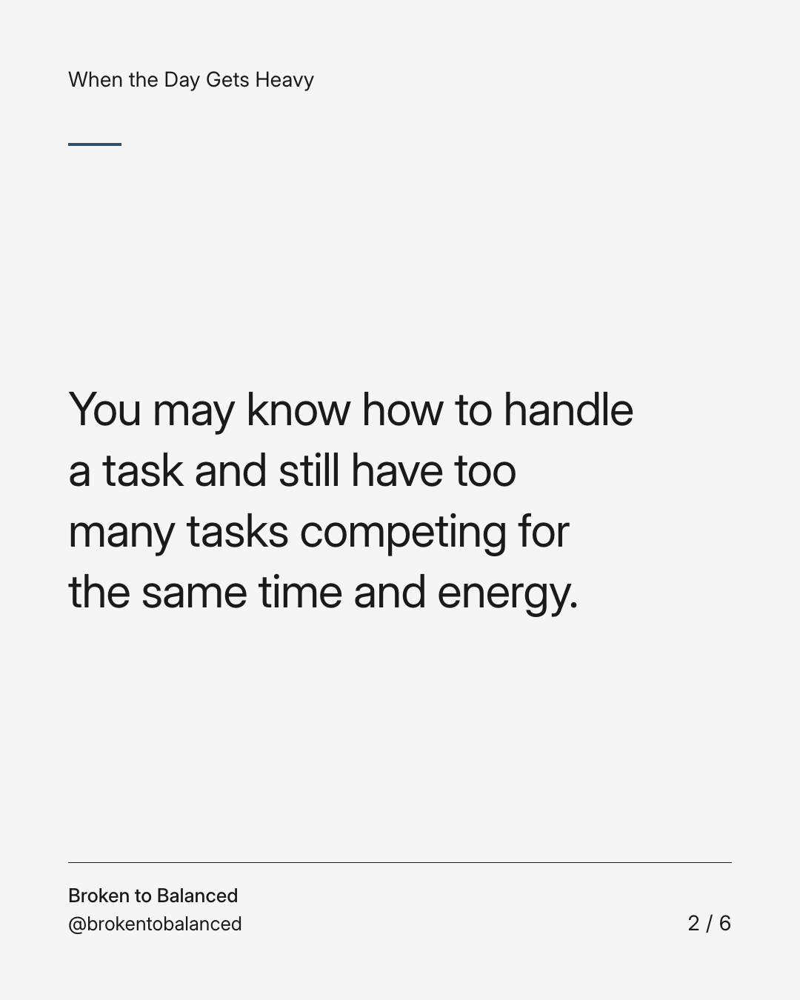
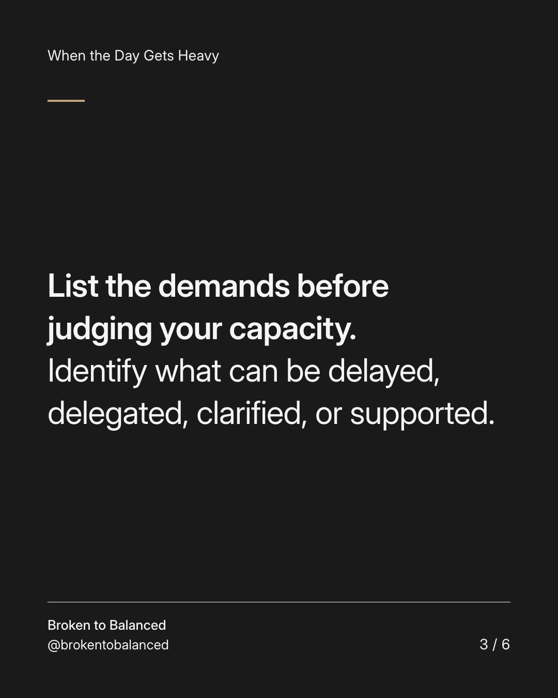
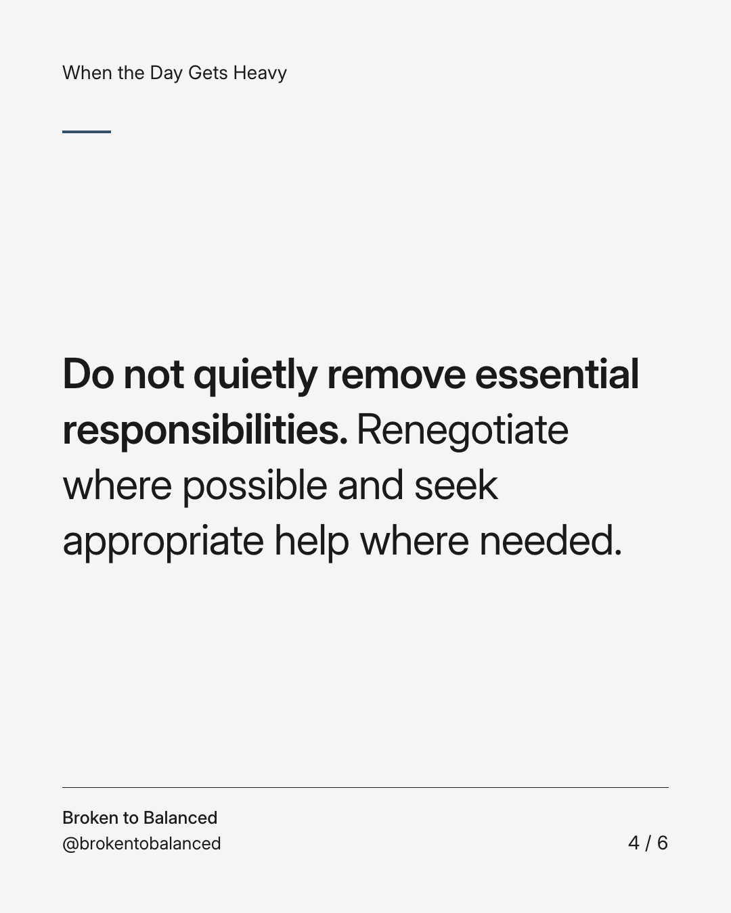
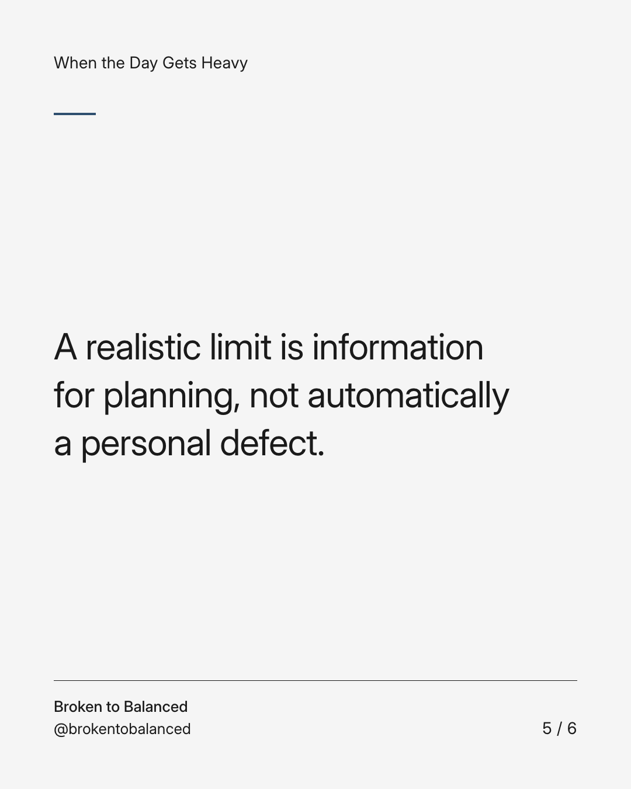
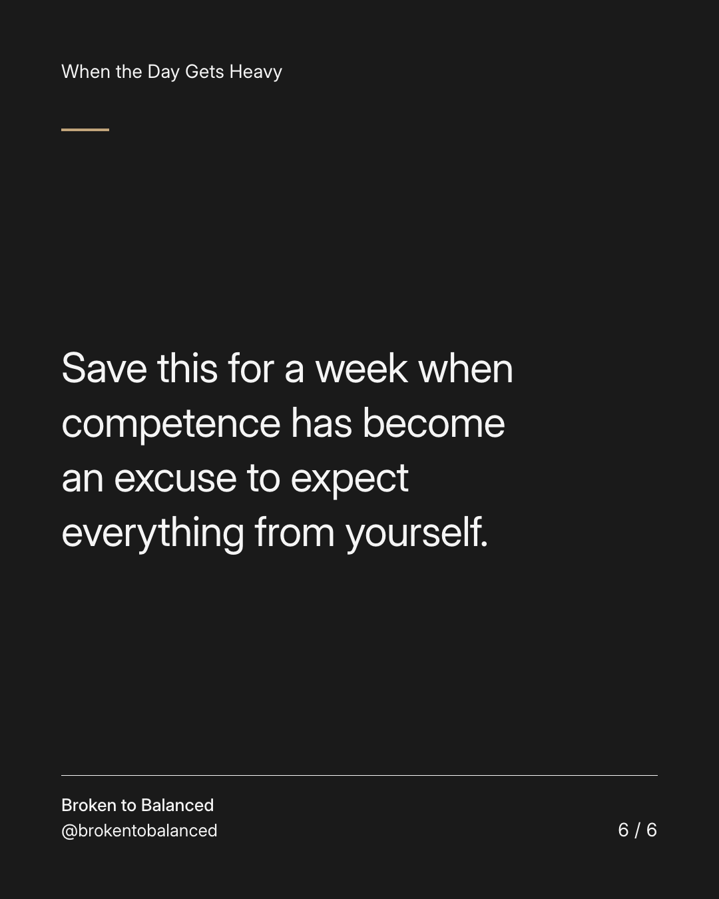

Exact text and accessibility text
Being capable does not mean every load is reasonable.
Slide 1 of 6. Being capable does not mean every load is reasonable.


Exact text and accessibility text
You may know how to handle a task and still have too many tasks competing for the same time and energy.
Slide 2 of 6. You may know how to handle a task and still have too many tasks competing for the same time and energy.


Exact text and accessibility text
List the demands before judging your capacity. Identify what can be delayed, delegated, clarified, or supported.
Slide 3 of 6. List the demands before judging your capacity. Identify what can be delayed, delegated, clarified, or supported.


Exact text and accessibility text
Do not quietly remove essential responsibilities. Renegotiate where possible and seek appropriate help where needed.
Slide 4 of 6. Do not quietly remove essential responsibilities. Renegotiate where possible and seek appropriate help where needed.


Exact text and accessibility text
A realistic limit is information for planning, not automatically a personal defect.
Slide 5 of 6. A realistic limit is information for planning, not automatically a personal defect.


Exact text and accessibility text
Save this for a week when competence has become an excuse to expect everything from yourself.
Slide 6 of 6. Save this for a week when competence has become an excuse to expect everything from yourself.
Exact caption
Plain-text fallback: select and copy the caption.